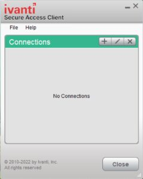
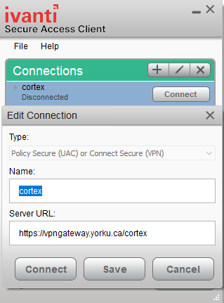
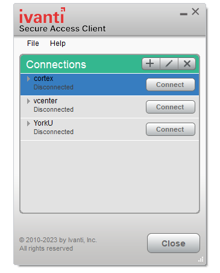
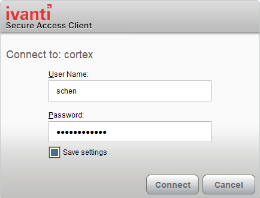
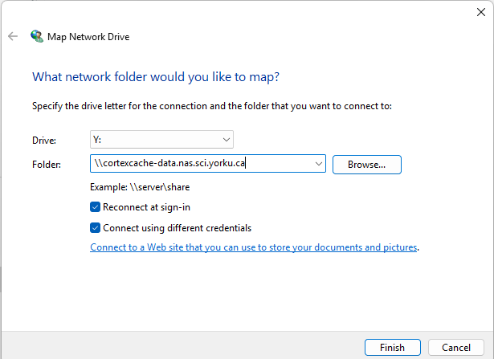
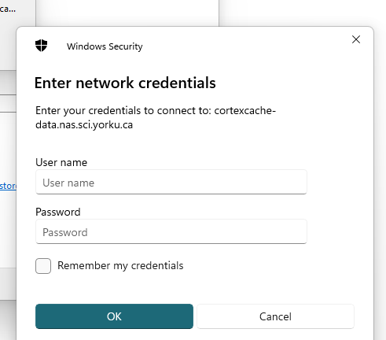

Before you start
Pick your operating system. The instructions below will show only the steps that apply to you, and your checklist progress is saved in this browser.
No system selected yet — the mount step will stay hidden until you choose one.
Your Passport York username and password (the same login you use for York email), and the Duo Mobile app set up for two‑factor authentication. If you don't yet have access to the Michaels-Group share, see Getting access first.
CortexCache is only reachable through the cortex VPN profile, even when you are on campus and connected to York's wired or wireless network. If you skip step 1, the mount in step 2 will fail or hang.
1Connect to the VPN (Ivanti Secure Access)
York uses the Ivanti Secure Access Client for VPN. It was previously called Pulse Secure; Ivanti bought the product and renamed it, so if you see either name (York's own pages still say "Pulse Secure" in places, and the Linux build installs to /opt/pulsesecure/), it's the same client. You only have to install it and create the profile once; afterwards you just click Connect.
Installers are hosted by York UIT (Passport York login required to download) on the UIT Internet Access page, under the VPN tab. Use the version marked Current (22.8r2 at the time of writing), not the older Pulse Secure 9.1 builds.
macOS: download the Mac installer, open the package and click through Continue ▸ Install. The client then appears in your Applications folder and in the menu bar. If macOS complains about an unidentified developer, allow it under System Settings ▸ Privacy & Security.
Windows: download the 64‑bit installer (or the ARM64 build on a Snapdragon laptop), run the
.msi, and accept the defaults. The Ivanti icon appears in the system tray.Linux: download the
.deb(Ubuntu/Debian) or.rpm(Fedora/RHEL). The client needs a desktop session (it embeds a browser for the sign‑in) and two dependencies:sudo apt-get install libnss3-tools libwebkit2gtk-4.0-37 # Ubuntu 22.04 / Debian 12 sudo apt install ~/Downloads/ps-pulse-linux-*.deb sudo /opt/pulsesecure/bin/setup_cef.sh installThen launch Ivanti Secure Access Client (
pulseUi) from your applications menu, or run/opt/pulsesecure/bin/pulseUi. On Fedora/RHEL usesudo dnf install ./ps-pulse-linux-*.rpminstead.Ubuntu 24.04 and newerThe client depends on
libwebkit2gtk-4.0-37, which 24.04 no longer ships (it has 4.1). The usual workaround is to temporarily add the Ubuntu 22.04 ("jammy") repository, install that one package, then remove the repository again. Very recent Fedora/RHEL releases have dropped the legacy WebKitGTK packages entirely and may not work until Ivanti updates the client. If you hit this, ask in the lab — connecting from a lab machine may be simpler.Launch Ivanti Secure Access Client (on Windows it lives in the system tray; on macOS in the menu bar). In the Connections panel, click the + button.

The client with no connections yet. - TypePolicy Secure (UAC) or Connect Secure (VPN)NamecortexServer URLhttps://vpngateway.yorku.ca/cortex
The name is just a label for you; the Server URL must end in
/cortex— the generic York VPN profile will not give you access to CortexCache. Click Save.
Adding the connection. 
The saved cortexprofile. Click Connect next to
cortex. Enter your Passport York username only (e.g.jsmith, notjsmith@yorku.ca) and your password, then Sign In / Connect.Leave “Save settings” untickedYork InfoSec asks that you do not tick Save settings on this dialog: with Duo two‑factor, a saved password causes failed logins later. You'll type your password each time you connect.

The sign‑in prompt. Your phone will receive a Duo Push notification. Tap Approve. The client status changes to Connected. Leave it connected for as long as you're working with the share.
If the push doesn't arrive, open the Duo Mobile app; there's usually a Request waiting banner you can tap. Alternatively, type your password followed by a comma and a Duo passcode in the password field, e.g.
mypassword,123456, using the six‑digit code shown in Duo Mobile.
2Mount the Michaels-Group share
With the VPN connected, attach the share to your computer so it appears like an ordinary drive or folder. The server address and login format are the same everywhere; only the mechanics differ by system.
The domain prefix yorku.yorku.ca\ (with a backslash) is required in front of your Passport York ID, e.g. yorku.yorku.ca\jsmith. Leaving it off is the single most common reason a login is rejected.
macOS Finder
In Finder, choose Go ▸ Connect to Server… from the menu bar, or press ⌘ K.
smb://cortexcache-data.nas.sci.yorku.ca/Michaels-Group/
Click the + button to save it to your favourites so you don't have to type it again, then click Connect.
Choose Registered User. Name:
yorku.yorku.ca\your_ppy_id. Password: your Passport York password. Tick Remember this password in my keychain if you like, then Connect.The share appears under Locations in the Finder sidebar and at
/Volumes/Michaels-Groupin Terminal. Eject it (click ⏏ next to it) before disconnecting the VPN or closing your laptop.
Optional: reconnect automatically at login
With the share mounted, open System Settings ▸ General ▸ Login Items & Extensions, click + under Open at Login, and select the Michaels-Group volume from the Finder sidebar. It will reconnect each time you log in — but only if the VPN is already up, so also enable auto‑connect in Ivanti or connect it first.
Windows 10 / 11 File Explorer
Press Win E, then click This PC in the left pane.
Windows 11: click the ⋯ (See more) button in the toolbar ▸ Map network drive. Windows 10: it's on the Computer ribbon tab.
\\cortexcache-data.nas.sci.yorku.ca\Michaels-Group
Tick Reconnect at sign‑in and — important — Connect using different credentials, otherwise Windows tries your local account and fails. Click Finish.

The Map Network Drive dialog. 
Credentials prompt. User name:
yorku.yorku.ca\your_ppy_id. Password: your Passport York password. Tick Remember my credentials so the drive reconnects without asking. The share opens as the drive letter you chose.
Alternative: map the drive from the Command Prompt
Open Command Prompt (or PowerShell) and run — replacing your_ppy_id, and M: with any free drive letter:
net use M: \\cortexcache-data.nas.sci.yorku.ca\Michaels-Group /user:"yorku.yorku.ca\your_ppy_id" /persistent:yesYou'll be prompted for your password. net use on its own lists mapped drives; to disconnect:
net use M: /delete
Linux CIFS
Tested on Ubuntu / Debian. On Fedora use sudo dnf install cifs-utils; on Arch sudo pacman -S cifs-utils. Everything else is the same.
sudo apt-get install cifs-utils -y
sudo mkdir -p /mnt/cortex
Replace
your_ppy_idwith your Passport York ID. The first line reads your password without echoing it, so it never ends up in your shell history or visible to other users viaps.read -s -p "Passport York password: " SMB_PASS; echo sudo mount -t cifs //cortexcache-data.nas.sci.yorku.ca/Michaels-Group /mnt/cortex \ -o username=your_ppy_id,password="$SMB_PASS",domain=yorku.yorku.ca,uid=$(id -u),gid=$(id -g) unset SMB_PASSuid=$(id -u),gid=$(id -g)makes the mounted files owned by your Linux user so you can read and write them withoutsudo.df -h | grep cortex # should show the share and its free space mount | grep cifs # lists all mounted CIFS shares
Your data is now under
/mnt/cortex.sudo umount /mnt/cortex
Do this before disconnecting the VPN; otherwise processes touching
/mnt/cortexmay hang.
Optional: a reusable mount script
Save this as ~/mount-cortex.sh, make it executable with chmod +x ~/mount-cortex.sh, and run it whenever you need the share. It prompts for your password each time rather than storing it.
#!/usr/bin/env bash
set -e
USER_ID="your_ppy_id"
MP=/mnt/cortex
sudo mkdir -p "$MP"
read -s -p "Passport York password for $USER_ID: " SMB_PASS; echo
sudo mount -t cifs //cortexcache-data.nas.sci.yorku.ca/Michaels-Group "$MP" \
-o username="$USER_ID",password="$SMB_PASS",domain=yorku.yorku.ca,uid=$(id -u),gid=$(id -g)
unset SMB_PASS
echo "Mounted at $MP"Avoid putting your password in the script, in /etc/fstab, or on the command line directly — it's your Passport York password and unlocks far more than this share. If you want an unattended mount, use a credentials= file with chmod 600 permissions and ask in the lab before setting it up.
Quick reference
Everything on one card, for when you've done this before and just need the values.
Troubleshooting
The share won't connect, times out, or “server not found”
Nine times out of ten the VPN isn't connected, or is connected to the wrong profile. Open Ivanti and confirm the cortex profile says Connected. The generic York VPN and campus Wi‑Fi do not reach CortexCache. If the VPN is up, try disconnecting and reconnecting it, then mount again.
My username or password is rejected
Check the username format — it differs between the two steps:
• VPN: your_ppy_id alone (no @yorku.ca, no domain).
• Share: yorku.yorku.ca\your_ppy_id, with a backslash, not a forward slash.
On Windows, if you didn't tick Connect using different credentials, Windows may never have asked you and is silently using your local account: disconnect the drive and map it again. If your Passport York password recently changed, update it in Keychain (Mac) or Credential Manager (Windows).
I never get the Duo push
Make sure your phone has signal or Wi‑Fi and Duo Mobile notifications are enabled. Open Duo Mobile and look for a Request waiting banner. Failing that, use a passcode instead of a push: enter yourpassword,123456 in the password field (password, comma, the six‑digit code from Duo Mobile). Duo problems (new phone, lost device) are handled by York UIT, not the lab.
The VPN keeps disconnecting
York's VPN profiles have an idle timeout of roughly 10–30 minutes with no traffic and a hard session limit of 8–10 hours, with a warning a few minutes before. Long transfers that exceed these limits will be interrupted; for very large copies, split them up or run them from a lab machine. Laptops going to sleep also drop the VPN, and the share with it: unmount before closing the lid.
Ivanti says my password is invalid even though it's correct
This is usually a saved password from an earlier session combined with Duo. In Ivanti, open the cortex connection's settings and choose Forget saved settings, then connect again without ticking Save settings.
Windows: “The network path was not found” or error 53 / 67
Usually the VPN. Otherwise confirm you typed two leading backslashes (\\cortexcache-data…) and no trailing slash. From a Command Prompt, ping cortexcache-data.nas.sci.yorku.ca should resolve to an address while the VPN is connected; if it doesn't, the VPN profile is wrong.
Windows: “Multiple connections to a server by the same user are not allowed” (error 1219)
Windows already has a connection to that server under different credentials. Run net use * /delete to clear all mapped drives, then map the share again.
macOS: “There was a problem connecting to the server”
Check the VPN first. Then make sure the address begins with smb:// and that you selected Registered User rather than Guest. If a stale mount is lingering, eject anything named Michaels-Group in the Finder sidebar and try again.
Linux: “mount error(13): Permission denied”
Wrong username, password, or domain. Note that on Linux the domain is passed separately (domain=yorku.yorku.ca), so username= should be your bare Passport York ID without the prefix. Also verify you can reach the server: ping -c 2 cortexcache-data.nas.sci.yorku.ca.
Linux: files are read‑only or owned by root
You mounted without uid=/gid= options. Unmount and mount again with uid=$(id -u),gid=$(id -g) as shown above. If you need a different SMB protocol version you can add ,vers=3.0 to the options.
Linux: “mount: unknown filesystem type 'cifs'”
cifs-utils isn't installed — go back to step 1 of the Linux instructions.
Transfers are slow or the connection drops
All traffic goes through the VPN, so throughput depends on your internet connection and York's VPN gateway. For large datasets, copy in the lab over a wired connection where possible, and avoid running analyses directly against the mounted share — copy the files you need to local disk first, then copy results back. Sleep/wake cycles on a laptop will often drop the mount; eject/unmount before closing the lid.
I can connect but I can't see the Michaels-Group share or it's empty
Your Passport York account probably hasn't been added to the share's access group yet. See Getting access.
Getting access
Two separate permissions are attached to your Passport York ID, and neither is automatic when you join the lab: access to the cortex VPN profile (every York member has the generic VPNYork profile, but restricted profiles like cortex must be requested by the profile owner through York UIT's "SSLVPN Request" form on Halo), and access to the Michaels-Group share itself. Jonathan requests both for you.
Students and staff normally already have one. If Duo isn't set up, follow York UIT's instructions at yorku.ca/uit … /duo/.
Send Jonathan (jmichae@yorku.ca) your Passport York ID. He will submit the VPN profile request to UIT and ask Science IT, who administer CortexCache, to add you to the share's access group. Allow a few working days.
Once you've been told access is granted, follow steps 1 and 2 above.
The share is shared storage for the whole lab. Keep your work inside the folder structure already in place, don't store personal files there, and never put your Passport York password in a script or config file that lives on the share.